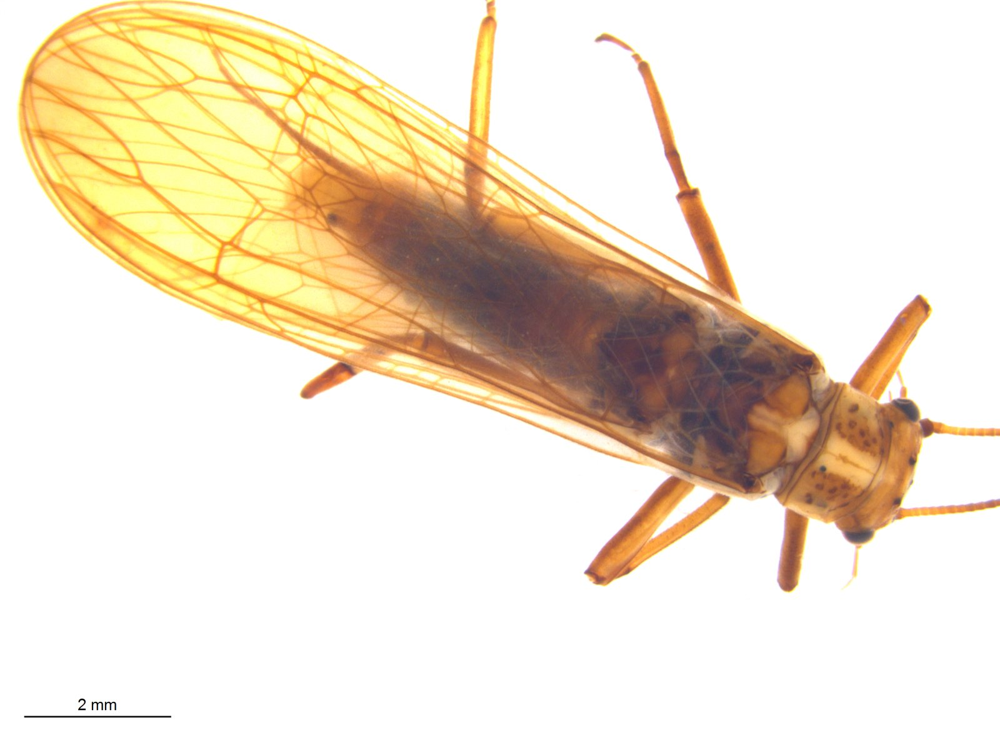

Database di riferimento dei plecotteri italiani
Stiamo costruendo una libreria di riferimento DNA barcode per i plecotteri italiani, per rendere affidabile l'identificazione di specie nei dati di metabarcoding dei nostri corsi d'acqua.

I plecotteri sono un ordine di insetti che popola prevalentemente i corsi d'acqua montani e collinari. Come altri insetti acquatici i plecotteri presentano uno stadio giovanile che vive all'interno dell'acqua e uno stadio adulto che vive in ambiente terrestre. Questi insetti sono molto utilizzati per il biomonitoraggio delle acque dolci, dove rappresentano il gruppo di invertebrati più sensibile all'inquinamento. Da un punto di vista ecologico sono molto diversificati, con specie che si nutrono di detrito organico sia fine sia grossolano che specie predatrici di altri invertebrati acquatici.
Secondo le ultime stime in Italia sono presenti circa 170 specie di plecotteri. Circa il 30% delle specie presenti in Italia sono endemiche, localizzate in areali molto ristretti. Questa situazione può essere in parte spiegata dal possedere una scarsa capacità di volo, tanto che alcune specie possiedono ali di dimensioni ridotte o addirittura sono prive di ali. Purtroppo la distribuzione geografica di molte specie è poco conosciuta, tanto che alcune sono conosciute da una singola località. Vista la scarsità di programmi di monitoraggio basati su metodi tradizionali, che con tutta probabilità non aumenteranno nemmeno in futuro, il DNA ambientale potrebbe rappresentare uno strumento per incrementare le nostre conoscenze sulla distribuzione di questi insetti.
Per utilizzare al meglio i risultati ottenuti con l'utilizzo di tecniche di DNA ambientale è necessario utilizzare delle banche dati di sequenze di riferimento il più complete possibile. Queste banche dati sono fondamentali perché consentono di assegnare il nome di una specie alle sequenze rinvenute con il DNA ambientale. Un recente studio effettuato dal nostro gruppo di ricerca ha però messo in evidenza come il numero di specie di plecotteri italiani sia limitato soprattutto per quanto riguarda le specie endemiche. Attraverso la collaborazione con esperti di plecotteri a livello nazionale ed internazionale (tra cui Gilles Vinçon, Tiziano Bo e Stefano Fenoglio), stiamo procedendo al barcoding delle specie mancanti così da rendere possibile il monitoraggio estensivo di questi meravigliosi insetti.
Senza un database di riferimento, gran parte del segnale genetico raccolto nei progetti di monitoraggio rischia di restare bloccato a livello di famiglia o di genere, perdendo la risoluzione necessaria per calcolare indici di qualità biologica affidabili.
Il progetto è in continua espansione: ogni campagna di campionamento aggiunge nuove specie e nuove popolazioni geografiche al database, colmando progressivamente le lacune ancora presenti per la fauna italiana.